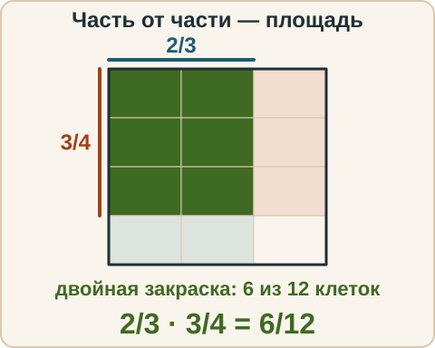
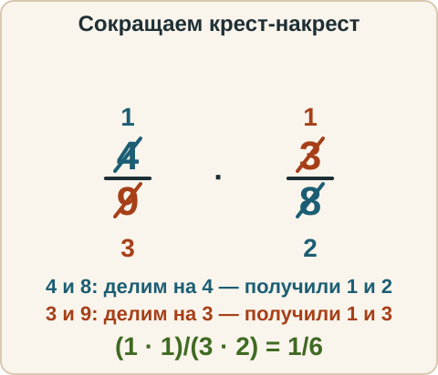
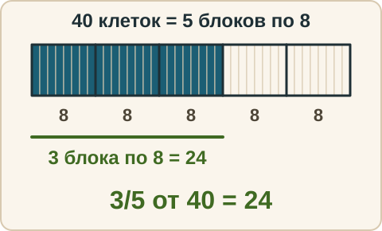
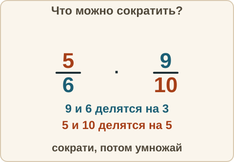

Математика: база · занятие 7Умножение дробей и дробь от числа
Цель: ты умножаешь дроби и смешанные числа, сокращаешь «крест-накрест» до умножения и находишь дробь от числа. Ответы и подсказки спрятаны: сначала реши сам, потом нажми кнопку.
Как записывать ответ. Число — целое число, без единиц измерения (если в задании сказано, в чём считать, пиши только число). Дробь — через черту и сокращённая до конца, например 3/4. Смешанное число — целая часть, пробел, дробь, например 2 3/4. Знак — один символ: <, > или =.
Вспомнить
Без подсказок, сразу проверка. Отмечай, на чём споткнулся, — в журнал.
- 3/4 + 1/6
- 5/6 − 2/9
- 2 1/2 + 1 3/4
- Знак: 5/12 и 3/8.
- (−5) · (−4)
- 3 + (12 − 4) : 2
Беглость: доля числа
Игра «доля числа» — заготовка для дроби от числа. Назови результат и скажи словами: «разделил на столько-то равных частей, взял одну». Ошибся — попробуй ещё раз. Без таймера.
- Найди 1/2 от 18.
- Найди 1/3 от 21.
- Найди 1/4 от 32.
- Найди 1/5 от 45.
- Найди 1/6 от 42.
- Найди 1/8 от 56.
Правило
Умножение дробей. (a/b) · (c/d) = (a · c)/(b · d). Здесь a и c — числители (сколько частей взяли), b и d — знаменатели (на сколько равных частей разделили целое), знаменатели не ноль. Числитель умножаем на числитель, знаменатель на знаменатель. Результат называют произведением дробей. Общий знаменатель искать не нужно: это не сложение.

Сокращение «крест-накрест». Перед умножением можно сократить любой числитель с любым знаменателем на их общий делитель (число, на которое делятся оба). Работает, потому что итоговая дробь (a · c)/(b · d) — одно произведение сверху и одно снизу. Область применимости: только когда между дробями стоит умножение. В сумме или разности так сокращать нельзя.

Дробь от числа. Чтобы найти a/b от числа N, умножаем число на дробь: N · a/b. Здесь N — число, от которого берём часть, a/b — какая это часть. Целое число можно записать дробью со знаменателем 1: N = N/1.
Из жизни. В книге 40 страниц, прочитали 3/5 книги. Прочитано: 40 стр. · 3/5 = 24 стр. Единицы сохраняем: страницы остаются страницами.

Смешанные числа. Сначала переводим в неправильные дроби (занятие 4), потом умножаем.
Разобранный пример
А. 2/3 · 3/4
- Умножаем: (2 · 3)/(3 · 4) = 6/12. Сокращаем на 6: 1/2.
- Короче: сначала сократить 3 сверху и 3 снизу, остаётся 2/4 = 1/2.
- Ответ: 1/2.
Б. 4/9 · 3/8
- Сокращаем крест-накрест: 4 и 8 на 4 — получили 1 и 2; 3 и 9 на 3 — получили 1 и 3.
- (1 · 1)/(3 · 2) = 1/6.
- Ответ: 1/6.
В. Найди 3/5 от 40 кг.
- 40 кг · 3/5 = (40 · 3)/5 кг = 120/5 кг = 24 кг. Или короче: 40 : 5 = 8, 8 · 3 = 24.
- Ответ: 24 кг.
Г. 1 1/2 · 2 2/3
- Переводим: 1 1/2 = 3/2, 2 2/3 = 8/3.
- 3/2 · 8/3 = (3 · 8)/(2 · 3). Сокращаем 3 и 3, 8 и 2: получили 4.
- Ответ: 4.
С подсказкой
Решай сам. Подсказку открывай, только если застрял.
- 5/6 · 9/10

Сам
Результат сокращай до конца, а если нужно, выдели целую часть. Два раза не сошлось — появится кнопка «Показать решение».
- 2/5 · 3/7
- 3/4 · 8/9
- 7/12 · 18/21
- Найди 3/8 от 56 м.
- 1 1/3 · 2 1/4
- 6 · 5/9
Ловушка
Ловушка. Умножение делают «как сложение»: оставляют знаменатель, умножают только числители. 2/7 · 3/7 = 6/7. Это ошибка. Проверка прикидкой: мы берём часть от 2/7, значит результат меньше 2/7. А 6/7 больше обеих дробей. Верно: (2 · 3)/(7 · 7) = 6/49. Проверь себя: знаменатели умножил между собой?
Смесь
Вперемешку: дроби, дробь от числа, знаки, деление. Форму ответа подсказывает серый образец в поле.
- 3/5 · 10/9
- 3/4 + 5/8
- Найди 2/3 от 45 кг.
- 7/10 − 1/4
- 2 1/2 · 4/5
- (−9) · 6
- Что больше: 5/7 или 7/10?
- 468 : 18
- 7/8 · 16/21
Журнал
Запиши 1–3 строки: «что перепутал → как проверить». Пример формы: «нашёл общий знаменатель при умножении → общий знаменатель нужен только при сложении, при умножении числитель на числитель, знаменатель на знаменатель».
- …